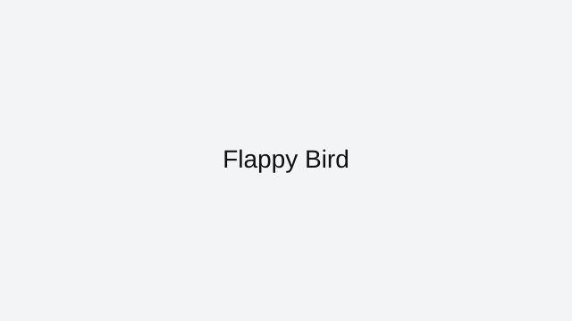

Flappy Bird
Flappy Bird feels brutal because it tests one thing relentlessly: rhythm under pressure. The controls are minimal, but timing discipline is everything.
How to approach this game
Keep your taps light and consistent, then adjust in tiny corrections near the middle of each pipe gap. Focus your eyes one obstacle ahead, not directly on the bird, to improve anticipation.
Common mistakes to avoid
Most failed runs happen when players over-correct after one bad flap. Reset mentally after each pipe and return to the same tap tempo instead of mashing.
Who this game is best for
If you enjoy difficult arcade loops and short retry cycles, Flappy Bird delivers instant challenge without setup.
Why it stays in our curated index
Flappy Bird stays in ArcadeZone's reviewed collection because it has a clear skill loop, reliable browser access, and enough real gameplay depth to justify written guidance. We do not keep indexed pages that only repeat generic descriptions or send users to thin external links.
Best session style for this game
Featured picks are chosen because they stay enjoyable even in quick sessions and still offer room to improve after the basics click.
Related reviewed games: 2048, Pac-Man, Snake.
ArcadeZone reviews this title for accessibility, control clarity, and replay value before keeping it in the curated index. Our goal is to help players choose the right game quickly, then improve through practical guidance instead of generic filler text.
What you'll love
- Curated review page with practical strategy guidance and clean navigation.
- Direct access to browser gameplay source with no installs required.
- Category fit: Featured gameplay style with related recommendations.
Game essentials
- Category: Featured
- Game type: Action
- Page status: Archive listing (not indexed)
- Play format: opens the original browser source in a new tab

How to play
Use the built-in browser controls shown by the game source and focus on timing plus positioning to improve consistency.
Tips & Tricks
- Keep your taps light and consistent, then adjust in tiny corrections near the middle of each pipe gap. Focus your eyes one obstacle ahead, not directly on the bird, to improve anticipation.
- Most failed runs happen when players over-correct after one bad flap. Reset mentally after each pipe and return to the same tap tempo instead of mashing.
- Practice in short sessions and track one improvement goal per run to build measurable progress.
Frequently asked questions
How can I be more consistent in Flappy Bird?
Use light taps at a steady rhythm and make tiny corrections instead of hard recoveries.
Where should I look while playing?
Watch the next pipe gap, not just the bird. This improves timing anticipation.
Is Flappy Bird mostly luck?
No. The game is skill-based rhythm control with short retry loops.
Play
Use the verified source link below to launch the game in a new tab.
Open Flappy Bird (external)Related games
More from ArcadeZone
Developer & Credits
ArcadeZone reviews Flappy Bird for control clarity, replay value, and accessibility before listing it as curated content. We link to the original browser source and provide player-focused guidance on this page.